Tap your shots as you practice. Electro-Coach reads your stroke from the results, tells you what to work on next, shows whether you’re improving and, in the Android app, plans your week around your tournaments. For every player, from beginner to expert.
Get started
Download Electro-Coach for Android, iPhone or your computer.
Start practicing: pick a drill, or let the plan pick one, and tap each shot.
Add your Railbird data, if you have it, for even more analysis and feedback.
Each shot is one tap: made, missed left or right, what the cue ball did. It’s even easier than it sounds, and you never leave the table.
2
Your stroke, checked
Strong fundamentals win matches. Your taps add up: when misses lean one way, stop shots drift or draw dies at the rail, the Stroke check shows the pattern, how sure it is, the likely causes and a drill to work on it. Your stroke as a table puts stop, follow and draw shots side by side.
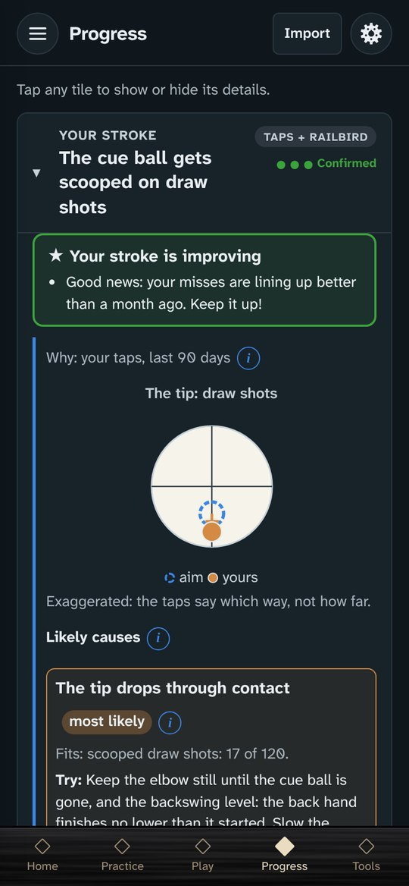
3
A plan that fits your time
Each 20–180 minute session has a warm-up, a stroke drill, a drill for the shots costing you the most and a game-like finish. It suggests drills that fill gaps in your data, so the picture keeps getting sharper.
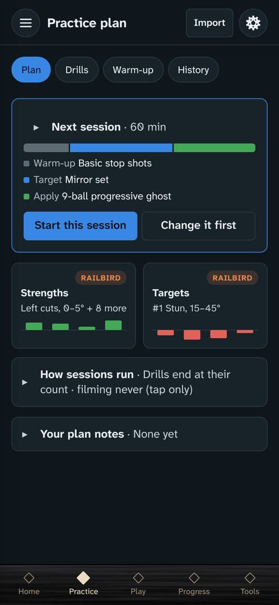
4
Am I improving?
Your history over time, each point with a range that says how sure it is, so real progress shows and one bad night doesn’t fool you. Progress keeps what your taps show and what Railbird shows apart, with your practice time against your weekly goal and your drills’ levels.
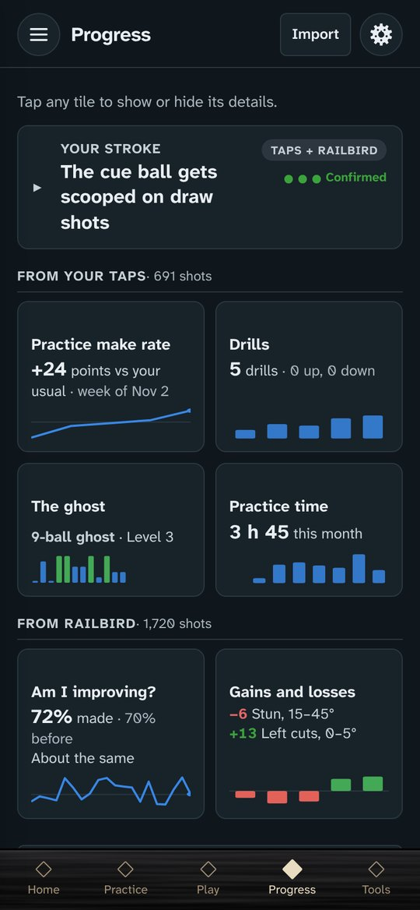
5
Plan around your tournaments
Link the calendar that holds your pool events (Google, Outlook or Apple) and your tournaments show on Today, with the place and the game. From five days out, Warm-up has a plan that changes as the day gets closer: match conditions first, then sharpening, then your warm-up on the day. Afterwards, a one-minute debrief shapes the next one. In the Android app; your calendar link is only ever sent to your calendar’s own service.
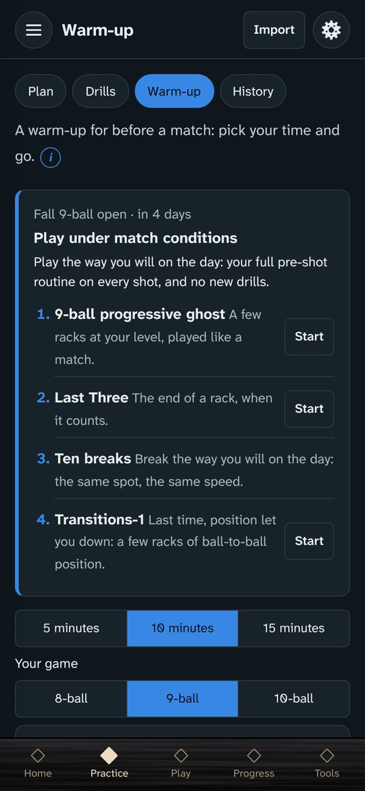
Why tap?
One tap a shot. You see what the camera can’t: where the cue ball went and what your tip did. In a few weeks your taps show which way you miss, and why.
It’s quick. A set of 10 stop shots adds about 10 seconds.
You see what a camera can’t. Where the cue ball went, whether it drifted, the English it showed, where your tip finished.
It adds up. After a few weeks your taps show which way you miss and the likely reason, with how sure that is.
Naming each result is the attention a coach asks for, so tapping is part of practicing on purpose. And if you’d like an AI coach, give it something real to work with: the journal exports a summary of your practice for one.
How the Stroke check is tested. Its patterns and likely causes are tested on thousands of simulated players with known stroke flaws, to measure how often it finds each flaw and how rarely it calls one that isn’t there, and checked against real strokes with flaws made on purpose.
Practice with purpose
6
Progressive drills for every level
Levels move up and down on the evidence of your results, so luck moves you less, from beginner to expert. Every drill has a diagram and shows where to hit the cue ball.
7
Purposeful doesn’t mean boring
Spend a few minutes a day reinforcing your stroke, then put it to work in game-like drills: the Progressive 9-ball ghost, the Progressive 8-ball ghost, 10-ball bowling and Last Three. The ghosts and bowling track your break, where each rack ends and how often the money ball is the miss. With a tournament in your calendar (Android app), the ghost switches to its game: 8-ball, or 9-ball for 9- and 10-ball.
8
Statistics, not AI
Every number is worked out on your phone from your own shots, the way a scientist would: each shot measured against its difficulty, and each result with a range that says how sure it is.
9
Your data stays on your device
No account. What you enter stays on your device, and backups are files you keep. You own your phone: use it for good.
10
Even better with Railbird
Add your Railbird shot data for heat maps, your best speeds and a shot-by-shot picture of your game. More about Railbird
Tools for the table
Practice journal
Notes on practice, equipment and competition days, lined up with your numbers. Share a report with your coach, or a summary with an AI coach.
Pre-shot routine
Written your way, fully editable and one tap away, with a home-screen widget on Android.
Shot clock
Competition quality, with extensions and the match score, and a match you can send to a friend’s Electro-Coach.
Warm-up
5, 10 or 15 minutes before a match, with a list you can make your own.
Straight pool scoring
Under WPA or CSI rules.
Shot visualizer
See a cut from behind the cue ball, with the fractional overlap, or lay it out from above with the ghost ball and the contact-point lines.
NWPA event in Seattle, Washington, October 2026
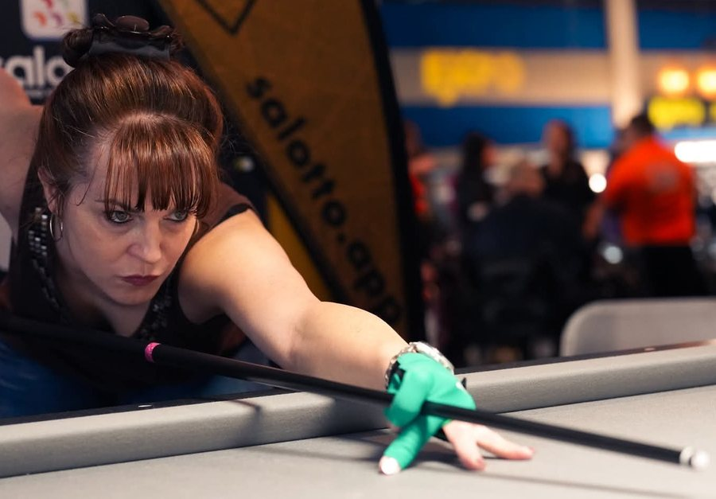
CSI Expo, Las Vegas, Nevada, February 2026
Why I built it
I started playing pool in college in 1994 and stayed a casual bar player for years, picking up every bad habit that comes from learning that way. In 2019, after graduate school, I started playing in tournaments, and by 2020 I was entering regional and national events. In 2024 I started working with a coach and qualified for my first WPBA event. Then my coach moved away, and I kept building structured practice plans for myself so I could rebuild the foundation of my fundamentals and continue to progress as a player.
I’m a scientist with a background in statistics, and Electro-Coach started as an analysis of my own Railbird data, to find what to practice without a coach watching. It grew into the practice plan, the drills and the Stroke check I now use every day.
Pool is fun, and that’s why people love it. It’s played in cultures all over the world. It brings together the friends and family you know, and it’s a way to meet new friends wherever you go. When people play excellent pool, it’s captivating to watch, for everyone from small children to seasoned professionals. My sincere hope is that you discover this game, enjoy it and make it your own, however you get there.
This is a labor of love and still a work in progress. I hope it helps you too.
— Lela
A look inside
TodayPractice planTapping a drill
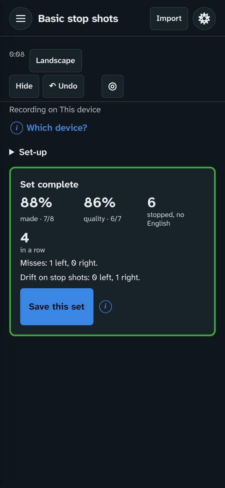
Set complete
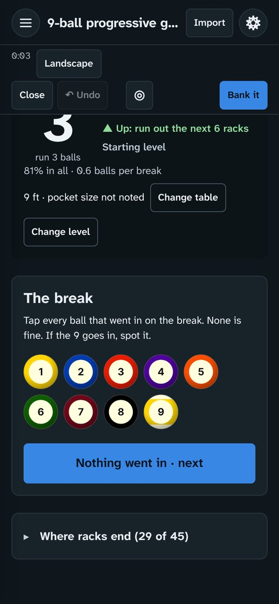
Progressive ghostProgress
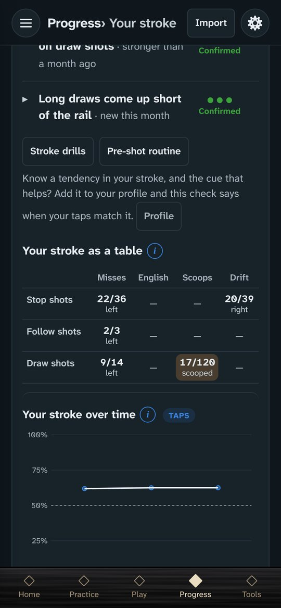
Your stroke as a table
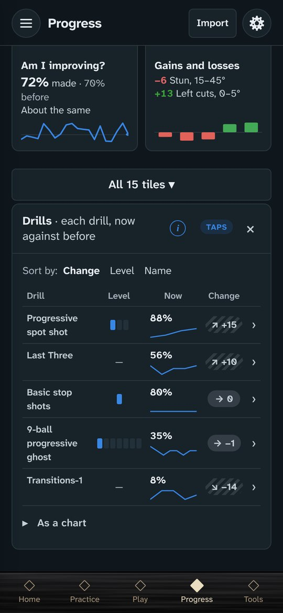
DrillsTournament week
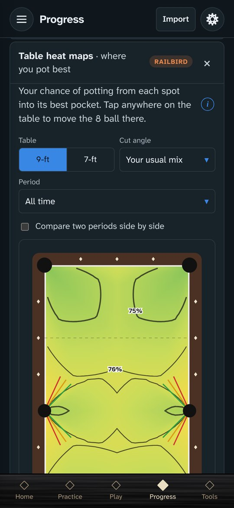
Heat map
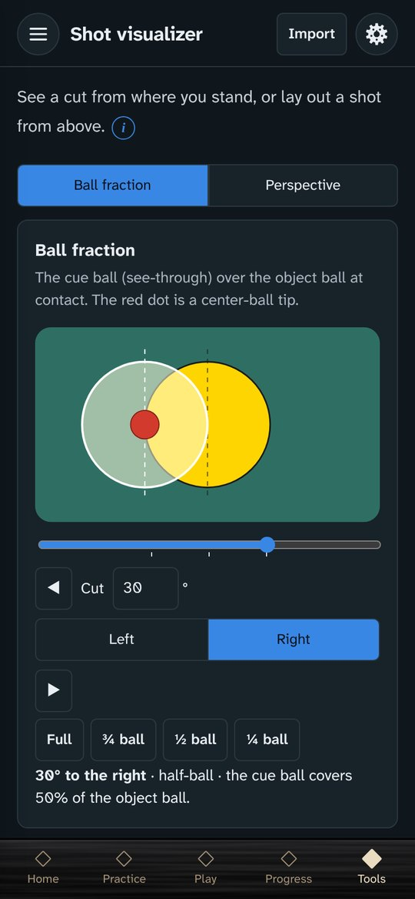
Shot visualizer
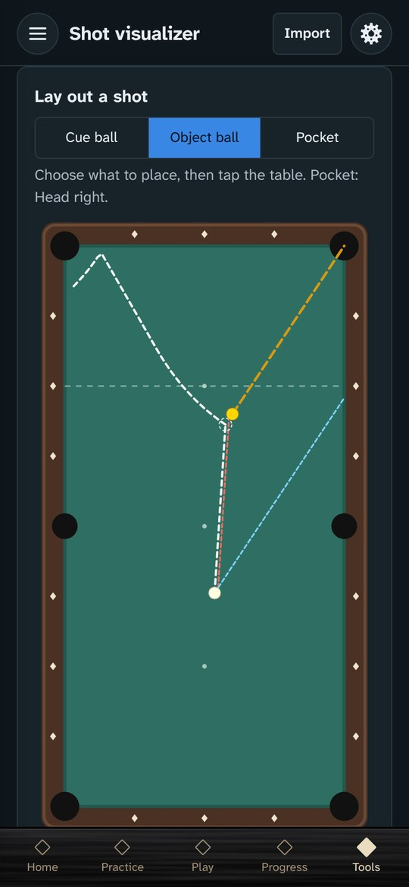
Lay out a shot
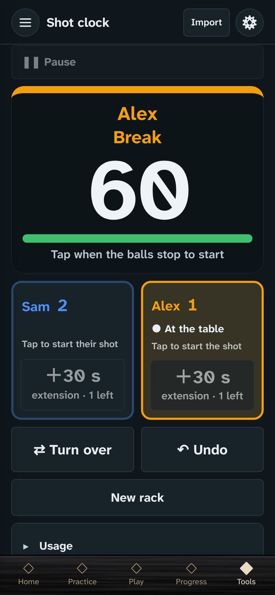
Shot clock
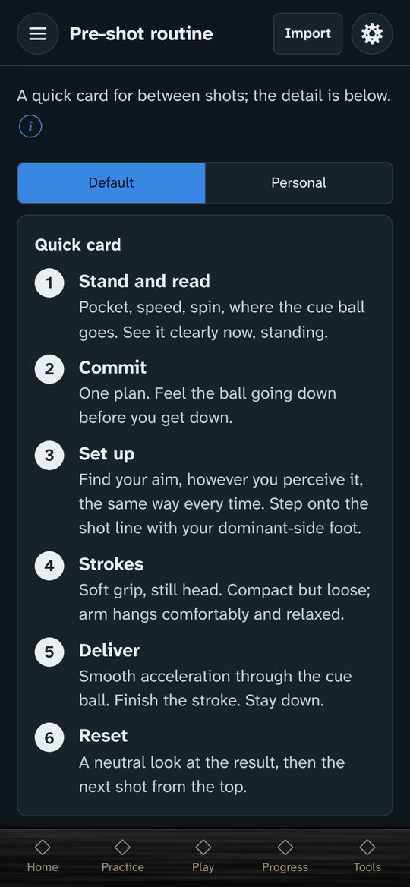
Pre-shot routine
Better with Railbird
Railbird films your play and measures every shot. Electro-Coach works without it, but it’s at its best with it. Your Railbird data shows how often you make each kind of shot against how often you should, with a shot predictor, your best speeds and heat maps of where you pot best, and it feeds the progress tracking and the practice plan. If you’re serious about getting better, a Railbird subscription is well worth it.
Railbird is a companion, not a chore
Film free play. Solo play gives the widest mix of shots, the ones you actually face. Then watch the recording for one thing in your mechanics to work on.
Film a drill now and then to fill gaps. Copy the drill’s Electro-Coach tag and add it as a tag on the Railbird session, so Electro-Coach knows which drill the shots belong to.
Film as often as you can, especially at first. The more you record in your first weeks with Railbird, the sooner your numbers come into focus. If one or two 20–30 minute recordings a week is what fits, that’s fine: the picture just sharpens a little more slowly.
One device is all you need. Film with Railbird in some sessions and tap drills in others. If you have a second phone or tablet, it can film while you tap on your main device, so you collect video and taps at the same time.
The browser warns the file might be harmful. Apps from outside the Play Store always get this warning. Choose to download or keep it anyway.
The download finished but tapping it does nothing. Open your Files app (or Downloads), find electro-coach.apk and tap it there.
Play Protect doesn’t recognize the developer. That’s because the app isn’t in the Play Store. Choose More details → Install anyway.
“App not installed”. The app needs Android 9 or newer (Settings → About phone → Android version). Otherwise, usually not enough free space. Don’t uninstall a working copy unless you’ve backed up: uninstalling erases the app’s data.
iPhone
On your iPhone, tap Install on iPhone below.
The app shows you how to add it to your Home Screen, step by step. It takes a minute. In DuckDuckGo or another browser that can’t do it, you’ll use Safari for that one step.
Open Electro-Coach from its new icon: your setup starts there. It runs full screen, works offline once loaded, and your data stays on the phone.
You keep using your usual browser for everything else.
The end of a timed practice block sounds only while the app is on screen: iPhone web apps can’t schedule alerts in the background. FargoRate search works in the Android app; on the web, enter your rating by hand. The tournament calendar works in the Android app.
Computer
Open the web app in Chrome, Edge or Safari.
Or download the single-file version and open it from your computer, no internet needed.
Electro-Coach is in active development. Here’s what each release brought, newest first.
0.1.114 ·
The tournament week
The app now needs Android 9 or newer.
Upcoming tournaments on Today, with the place and the game, and a tournament week: from five days out, Warm-up has a plan that changes as the day gets closer, and after it a one-minute debrief shapes the next one.
Outlook and Apple calendars work as well as Google, and you can link one by scanning a QR code from electro-coach.com/calendar.
Progress groups its tiles under From your taps and From Railbird, with new tiles for Practice time and Drills, and Your stroke as a table.
Swipe sideways between the bottom bar's screens, Tools has its own screen, and Delete all data now clears everything.
0.1.107 ·
Tournament days from your calendar
Link your Google pool calendar (Settings → Tournament calendar, Android app) and your tournaments show in pink on This week. Mark any you drop out of as Not going, without touching your calendar.
With a weekly goal of 5 days or more, a tournament day counts as practice; with a smaller goal, This week says how many practices are left before the tournament.
Gains and losses has a Change view: each kind of shot's last 90 days against the 90 before, with its chart when you tap a number.
The players' survey is easier to find, and Share with your coach can cover just today or this week.
0.1.106 ·
Levels that move on the evidence
Levels move on the evidence: every set or rack counts toward a move, so luck moves you less. A drill's page shows how far you are toward moving up or down.
After a drop in the ghost, a run-out can take you straight back up once you've played 5 racks there.
Match score: name both players when you set it up, and choose winner breaks, loser breaks or alternate breaks.
Gains and losses come in four small tables: cuts by angle, left and right; corner and side pockets; spin; backcuts, with plainer names: "from mid-table" and "along the rail".
0.1.105 ·
Match score, and Matches to share
Match score on the shot clock: pick the game and the race, and New rack asks who won. Hill-hill switches on by itself, and the match ends with each player's average shot time, time fouls, extensions and the fastest rack.
Matches, on Play: your shot clock and straight pool matches in one list. Share one as a small file that opens in the other player's Electro-Coach.
The shot model is on Progress now, opening on a Summary, and kinds of shot are pooled with their neighbours, so a kind with few shots can't top your gains and losses on luck.
This week on Today shows each day, Monday to Sunday; swipe for week by week.
0.1.104 ·
Side pockets in your yardstick
Side pockets now have their own place in your yardstick, and the table map, the Model screen and the speed profile all use your yardstick's model.
Speed words follow the speed profile's columns: delicate, easy pocket, firm pocket and hard.
Shot clock: tap the player who's shooting and the table turns over by itself. In 8-ball ghost you can break again, once per rack.
Your focus says what you saw on film. The Film review takes a note in your own words, and if you don't film, a stroke check-in asks the same question.
0.1.103 ·
Your progress, and your position
Am I improving? now gives two numbers: your shot-making at the same difficulty, and how makeable the shots you leave yourself are (your position). Over time says it in a sentence, with the chart a tap away.
Film review: on a day you film, Today asks what you saw on the film, with a link to watch your session in Railbird. Your answer shows on Your stroke for 30 days, and Your stroke tells you when a likely cause is fading.
Filming days are spread through the week, and you can film up to five times a week.
Speeds come with words (soft, slow–moderate, moderate, firm, hard), and the Speed sweet spot compares your usual speed with the best.
0.1.102 ·
A truer yardstick
Progress and the practice plan now measure you against the richer shot model you could compare on the Model screen, and every range includes its own uncertainty.
The session editor judges a stroke drill or a ghost by where it belongs, wherever you drop it.
English on your deep draws says what it's for until you tap your first make with English.
0.1.101 ·
Colours you can trust, and a session that keeps its shape
The practice session editor keeps the workout's order: Warm-up, Target, then Apply and Film. A block out of order is hatched in red.
Green and red on Progress and Railbird sessions now mean a change that's big and more than chance; one that could still be chance is striped or dashed.
Week by week compares each week with your usual from your other weeks.
0.1.99 ·
Long draws, the cloth, and a new yardstick on trial
Long draws that come up short on Progressive deep draw and the X drill now count, read against the level you played and the cloth you play on. On their own they can make a stroke that's too fast a possible cause, never a likely one.
English on your deep draws, week by week, on the drill's page and as a tile on Progress.
The session editor: a block you drag takes the phase where you drop it, and is hatched in red where it doesn't fit.
The Model screen tries out a richer model of your shots beside the current one.
0.1.97 ·
Your stroke, read more fairly
Short draws count only on Basic draw shots and Center table draw, where the rail is in easy reach: on the X drill, short of the rail is the distance, not your stroke.
Scooped draw shots now count against a stroke that's too fast, as the field test showed, so scoops point to the tip dropping or the grip.
0.1.96 ·
Your stroke, from real flaws
Your stroke reads its likely causes from two field tests of stroke flaws made on purpose: a hand flaw and your vision center read the right way round, and the grip, the tip and a stroke that's too fast each have a sign of their own.
Draws that come up short of the rail show on Your stroke, against your own usual.
After a drift on Basic stop shots or the Bridge check, a card asks whether the cue ball had English too.
The freeze check is on stop-shot drills only, and off until you tick it; Your stroke offers it when it's needed.
Your stroke today, after a practice session and on Progress, says what today's taps show against your last 90 days, and Your stroke in periods says when a pattern started or eased.
One Undo, in the bar at the top of every drill's tap screen.
0.1.95 ·
More room on the tap screen
While a set is open, the bar at the bottom steps aside, so every button is in view.
A new personal best shows for a few seconds at the top of the tap screen, not over the buttons.
Run-out drills: larger ball buttons, and the ball you picked stays picked when you turn the phone.
Backups count your sets and journal entries, and the restore preview shows your phone's own date and time.
Your player profile saves as you change it.
0.1.93 ·
Bridge reminders and Share Electro-Coach
The Bridge check reminds you which bridge to use: a short one as the set starts, and a long one when it's time to switch.
Progressive deep draw offers the freeze check too: tick it under the Missed buttons.
Progressive X drill, sideways: on follow shots, "CB missed left" and "CB missed right" sit side by side, each on its own side.
Share Electro-Coach, at the top of Settings and in About, sends the app to a friend.
New players without Railbird start with no filming in their plan; with Railbird, twice a week.
0.1.92 ·
Undo at the top
On a drill's tap screen, Undo now sits in the bar at the top, upright as well as sideways, so it's always in view.
Settings → Appearance: the freeze check switch reads "Freeze check on where it's recommended", the plain way round. It works as before.
0.1.91 ·
The freeze check as a second step
With the freeze check on, tap the shot's outcome on the usual screen; then a card asks where your tip finished: left, on the line or right, or Unsure while you learn to see it. The tap screen is back to how it was.
Settings → Appearance can start the freeze check off on every drill; a drill you turn it on for keeps it on.
The app's icon now shows in places Android draws icons in one color, such as themed icons.
0.1.90 ·
Your focus in words, as often as you like
Your focus is in words, and Settings → Appearance sets how often it comes up: every set, the first set of a session, the first set of each drill in a session, or once a day for each drill.
With the freeze check on, the tap screen still fits: upright, the row and the buttons are a little slimmer so every tap stays in view; sideways, "On the line" fits its button at any text size.
0.1.89 ·
Your focus as a set starts, and the freeze check drill by drill
Your focus comes up over the tap screen as a set starts, with what to try from Your stroke. Got it puts it away.
The freeze check is on by default on the shorter stroke drills, where the tip's finish is easy to see, and offered on the longer ones. Each drill keeps your choice, and the tick sits under the Missed buttons.
The freeze check's row keeps its place on the tap screen, so Made and Missed never move, sideways too.
What's new shows the freeze check and Your focus right in the card when you tap Show me, and Got it takes you on to the next card.
0.1.88 ·
The freeze check, the Bridge check, and smaller backups
The freeze check: on the straight-in stroke drills, tap where your tip finished after each stroke, the most direct sign of the back hand moving. Your stroke weighs it with the rest.
Bridge check, a new stroke drill: the same stop shot with a short bridge, then a long one. Misses that change with the bridge point to the stroke; misses that don't, to the aim.
Backups are compressed, about a tenth of the size (13 MB down to about 1 MB). Older backups still restore.
A measle ball tip on the stroke drills, for seeing spin in any direction.
0.1.87 ·
After a miss, your cuts by angle and spin, and likely causes weighed
Progress → After a miss: your make rate on the shot right after a miss against right after a make, compared on the same shot, so you can see whether a miss carries over.
Your stroke → Your cuts by angle and spin: thick and thin misses by cut angle and by stun against follow, to tell throw from the picture.
Likely causes are weighed by how well all your taps fit each one, English, misses, drift, scoops and short draws together, instead of points per pattern.
Extended stroke practice's coaching points to the English, which says more than the side of the miss.
0.1.86 ·
A steadier Stroke check, and the heat map's nearer corner
Your stroke allows for an off night: taps from one session count for less than the same taps spread over several, so a player with no flaw rarely sees a pattern, and a real one shows once it holds up across sessions.
Possible and Confirmed now come from one estimate, how likely it is that the taps really lean, rather than two separate rules.
Compact and Extended stroke practice misses count the other way: the ball you strike there is the cue ball, so a miss right is where an object ball would have gone left.
Heat maps: a straighter approach into a pocket never reads harder, so near the foot spot the map points to a near corner, not a far one.
0.1.85 ·
Your stroke in periods, a side badge, and a clearer heat map
Progress → Your stroke: the last six months in two-week steps, each pattern where it showed, with your technique and equipment notes along the top; tap a step for the likely causes then.
On drills you shoot both ways, a badge in the corner of the count shows ◀ L or R ▶, readable from the rail.
Heat maps: the object ball is a black 8, starting on the foot spot and moved by a tap; and a ball farther from a pocket never reads easier than a nearer one.
The stroke workout plays each progressive drill at your level, not every level; sessions can be 30, 45 or 60 minutes or your own length; and a running session shows as a small flag, not a banner.
The explanations behind ⓘ now describe how each number is worked out, and the coach summary says how sure each item is.
0.1.84 ·
Grip and Bridge in words, for now
Technique → Grip and Bridge are written references for now, each kind of grip and bridge in a short list.
0.1.83 ·
A switch for where your vision center sits, and the grip behind a low, sideways hit
Vision center: a plain head with a dashed line through the vision center, on the cue or off it, and a switch to see a vision center under the left eye, in the middle of the face or under the right eye.
Progress → Your stroke: a low hit and English to your cue-arm side together now point first to the grip closing at contact, which pulls the butt up and in.
0.1.82 ·
Grip and Bridge, your focus before a set, and likely causes from how the cue really moves
Technique has Grip and Bridge tabs, and pictures in Vision center and Delivery: the head over the cue, the bridge as a pivot, what bridge length does to English, and the freeze check.
Progress → Your stroke reads the likely causes from how the cue moves at the bridge: the back hand coming in or going out, the grip tightening, the tip dropping, your vision center, a stroke too fast. Possible contributors are listed after the likely ones.
Your stroke checks whether your cut shots miss to the same side as your straight-in shots, which tells a shifted picture from a stroke flaw.
Before the first tap of a stroke or cut drill, a small card shows your focus: the top likely cause and what to try. Settings → Appearance turns it off.
Progress: Personal bests have a tile of their own; Am I improving? is the verdict and one chart, the numbers in a fold; Over time has a key, and one drill opens at a time.
0.1.81 ·
Likely causes, Technique tabs, and more of Progress in pictures
Progress → Your stroke ranks the likely causes from your taps (a cue slicing across the ball, your vision center, the tip pushed out, the stroke under effort, a stroke too fast), the most likely open with what to try, and how to tell them apart at the table.
Technique has tabs: Stance, Vision center (with square or open stance for sighting) and Delivery.
Progress: Am I improving? shows before and now as two dots; Gains and losses, Drill levels, Personal bests and More detail as you film are pictures first, with how to read them behind ⓘ and a line for the statistically minded.
Over time shows how sure each drill's earlier and latest numbers are, so a single perfect rack no longer reads as a firm 100%.
Drill pages show your last few sets near the top; Play shows the ghost and 10-ball bowling as three numbers, like straight pool; Railbird sessions each show made against expected.
Security: the Android app now has a Content Security Policy, like the website.
0.1.79 ·
Progress in pictures
Progress → Your stroke: a picture of what your taps suggest, the cue ball's line against your aim from above and where the tip meets the cue ball, with the taps behind it as bars.
When your misses all go one way, Your stroke adds a short note on vision center, with how to check yours behind ⓘ.
Progress → Over time: each kind of shot as two bars, you against your yardstick, and each drill as one line from earlier to now; tap any of them for its chart.
Progress → Your data: your filmed shots month by month, and how sure a make rate is from this many shots.
Progress → The ghost: the 9-ball and 8-ball ghosts side by side as bars: run-outs, potting and how much of the rack you cleared.
Security: the app's build no longer lets packages run their own install scripts, the way recent npm attacks spread.
0.1.78 ·
Tap a table to see it big, Drill by drill, and tidier screens
Tap any table diagram, on a drill's page or on a tap screen, to see it full screen with the ball numbers readable; sideways it's drawn lengthwise.
Last Three: any pocket counts (the lines are only suggestions), Layout C's 8 is suggested into the foot-right corner, and there's no Out of line button: with three balls left, any shot that makes the next ball is fine.
The summary when a set is complete fits on one screen at any text size, upright and sideways.
Cue tips show a short heading, such as First shot, with the full wording behind ⓘ.
Progress → Tapped make rate: a short date under each week, and Drill by drill, your make rate on each drill as a bar beside what the shot allows. Drills with fewer than 30 shots wait in a fold, hatched.
Play: Straight pool is a slim tile with your matches, high run and average balls per inning; tap it for the full card.
0.1.77 ·
Backups after practice, a typical player to measure against, and tidier tap screens sideways
Automatic backups also save when you finish a drill, a game or a practice session, so the day's practice is in the folder that day. Still one file a day: a later save replaces it.
Home asks you to choose a backup folder until one is chosen (× puts the question away for a week). Settings says Back up now still saves a copy anywhere you like.
In Chrome or Edge, the browser may ask once more before saving to the folder; choose Allow on every visit and it won't ask again. The Android app never asks again.
Against the shot itself, on Progress: every player now sees how often a typical club player makes each drill's shot, next to how often they make it. With filmed Railbird shots, your own yardstick shows too, with the typical player's beside it.
Last Three: the layout's name with its details behind ⓘ, and sideways the counts on one row, so the layout fits beside its name.
Sideways, the 8-ball and 9-ball ghost use the same bar as every other tap screen, with ◎ in the middle. A single cue tip's caption has the room it needs.
0.1.76 ·
Automatic backups, a mark for the game drills, and your drills against the shot itself
Automatic backups: choose a folder once in Settings → Backup (in the Android app, or Chrome or Edge on a computer), and the app saves a backup there once a day when you open it. The newest 10 are kept; nothing else in the folder is touched, and the backups go only to that folder.
Every backup now keeps the settings on your device too: levels you picked, bars you changed, which hand you play with, text size and the sideways setting, so restoring on a new phone brings them back.
Home asks you to choose a backup folder until one is set, and in a browser that wants its OK again, one tap allows the day's backup.
A lightning bolt through a ring marks the game drills: the Spot shot challenge, 3-ball continuous, the 8-ball and 9-ball ghost and 10-ball bowling. Favorite drills and Drills for you show how many drills they hold.
Tapped make rate, against the shot itself: with filmed Railbird shots, each drill with a fixed shot shows what your yardstick expects from its cut and distances, next to how often you make it.
Spot shot challenge: Cancel this game, under the taps, with a second tap to be sure; nothing from the game is kept.
Tap screens: ◎ sits in the middle of the top bar, upright and sideways. On run-out drills, Learning mode moves under the taps, with its explanation behind ⓘ, so the cue tip diagram stays in view.
0.1.75 ·
Two new drills, the Transitions drills under one set of rules, and a tap-screen bar that stays put
Transitions-2: a new nine-ball layout around the table, cue ball on the center spot, with the first shot's cue tip shown.
3-ball continuous: the 7, 8 and 9 on the spots, run in the corners over and over. The next ball and your run are shown large, a new high run on your table gets a small celebration, and the scoreboard keeps your high run, average run, runs per session and where runs end, for each table.
Transitions-1 and Transitions-2 play by the same rules: balls in order, any pocket, no contact, no hero shots. Both have a Touched another ball button, note the table and pockets, and keep a scoreboard per table (run-outs, average and median balls a rack, where racks end). In a practice plan: 10 racks or 30 minutes, whichever comes first.
Tap screens keep a frozen bar at the top, upright as well as sideways, with Hide, Bank it, ◎ to bring the taps back into view, and Landscape or Portrait.
Sideways, before a set starts, the table card sits beside the set's options, so Start is always in view.
The Spot shot challenge's draw for the first shot runs longer: fast at first, then slowing to where it lands.
Dark mode: the grey text is lighter and easier to read, and the Tapped make rate chart's labels and bars stand out; it starts at your first weeks of taps.
Ball sets are now Classic, TV and Black.
0.1.74 ·
Text you can read, tap screens sideways, fairer levels and make rate, and the ghost by balls left
Text size (Standard, Large, Larger, each shown at its size), the first question for new players, asked once of everyone already playing, and in Appearance, on top of your phone's own font size; the small grey lines are bigger and, in light mode, darker. Buttons on tap screens and the shot clock keep one large size whatever you choose, so they always fit.
Tap screens turn sideways when a set or block starts, and back when you finish (Appearance can turn this off). Undo sits at the top sideways. Bank it, until now Save and close, keeps every shot, even mid-game.
Appearance → Ball set: Classic, Pro-Cup or Black, in the drill diagrams and the ghost's ball chips, now drawn smoother with bigger number spots.
Tapped make rate compares each shot with your usual on that drill and level, so a week of hard drills doesn't look like a slump, and a swing of up to 8 points reads as a normal day. Stroke drills and drills you nearly always make are left out.
8-ball and 9-ball ghost: when a rack ends, tap how many balls were left, like the bowling scoreboard; your earlier racks count the same way. The bar to move up is 80% at level 3 and 5 points less each level after, with the bar to move down 20 points below it, judged on your last 10 racks at the level, from any visit, and rounded in your favor.
Spot shot challenge: a race to +5 as well as +10, each with its own scoreboard (date, time, shots, make rate, and games you banked early); Left cut and Right cut, each game starting on one drawn at random; the shot's diagram, cue tip and aiming reference sideways too; and how you shoot it under the clock against Level 3 of the Progressive spot shot.
Progressive spot shot: two sets in a row at 70% moves you up a level (80% before), and two below 50% moves you down.
Fairer levels: in X drill, Center table follow and draw, Mid-table stops and Tangent line escape, the two sets in a row that move a level must be on two different days. Tangent line escape moves up at 70% made, X drill at 60% quality, and the quick stroke drills move down below 65% made. Progressive deep draw is checked on each 10 shots: up at 80% made with 70% of the makes drawn to the rail.
Basic stop shots: CB followed in (scratch) and CB drew back, for a tip a little high or low.
Practice says Done for today once you've finished today's session, with the next one ready for tomorrow (or now).
Drill pages keep the first line of how it works, with the rest behind How it works, which opens by itself the first time.
Everyone sees Glance; each card's More opens the rest. The menu shows one group at a time, and the top bar says where you are once you scroll (Progress › Your stroke).
0.1.73 ·
A new look: tiles with your numbers on Home, Practice, Play and Progress, sections that fold to their answer, an aiming reference on drills, and the shot in perspective
Home: This week on top, then tiles for your Next session, a Shortcut (the 9-ball ghost and its level to start; ✎ changes it), your next Milestone, your Make rate, and a Strength and a Target picked from your shots. Your patterns sit under them, and Your numbers stay at the bottom.
Progress: Your stroke leads, its headline large with how sure. Below it, tiles that lead with your own numbers and a small picture: Railbird on the left (Am I improving?, Gains and losses, Is it side-specific?, Table heat maps, More detail, Your data), your taps on the right (Tapped make rate, The ghost, Drill levels, 10-ball bowling, Over time). Tap one and its detail opens underneath.
Every section folds to one line that says what it found, one open at a time: Settings, the practice plan, Session history, Resources, the shot model and About. Glance, Standard and Detail set how much an opened section shows, and every screen starts on Glance.
Practice: the next session starts condensed (its colored bar and one line per phase); tap its header for every drill and why. Strengths and Targets sit side by side.
Play: straight pool first (choose WPA or CSI rules when you start a match), then the ghost and 10-ball bowling, with your recent racks and games as bars.
Aiming reference: drills with a cut show the shot as you see it from behind the cue ball, beside the cue tip on the drill page, and on the tap screen when you hold the phone sideways.
Shot visualizer: two views as tabs, Ball fraction (until now Behind the cue ball) and Perspective, the shot from behind the cue ball about 20° down on a 9-ft table with the ghost ball dotted, the contact-point lines, and a dashed line through each ball (they line up on a straight shot). The slider moves the cue ball in Lay out a shot, cuts stop at 85° (a ball tapped past that goes to the nearest spot that's a shot), and the red tip is drawn to scale.
Back closes an open section or tile first, then returns to the spot you left, after a drill too. A section opened from a link (a Home tile, search) goes back in one step.
Player profile: questions in a new order; How do you like to practice sets your weekly tap goal (1, 3 or 5 days), which you can change right under it.
Settings starts with Player profile. In the menu, Table heat maps moved into Progress, Data distributions to the end of Analysis, Journal and Tournament prep to the end of Tools, and Form is now Technique. Search finds headings inside folded sections and opens the right one.
The bottom bar is now black wood, with the same diamonds.
0.1.68 ·
The shot you’re on in the drills of many positions, a loose grip in the Stroke check, shorter thin-cut sets, and the ghost sideways
The Open table cut ladder and the Spot shot wheel show each shot on a larger table beside the count, with its cut angle and your makes in all, and move on by themselves after each make. The Natural-roll cut ladder and Side-pocket go / no-go show their shots larger too.
Their set-up reads without position codes: the layout shows every shot’s aim line and the object ball’s path, and sits in the set-up between the marking steps and how to play the drill.
Their tip is about marking the positions with stickers (and peeling them off afterwards), not about setting up a straight shot.
Both drills say they’re worth filming as well as tapping: their many repeated shots at known angles make useful data for Railbird.
The Stroke check adds “On every stroke: Relax your grip hand and stay loose through the whole stroke” to each story, unless its focus already speaks of the grip.
Thin cuts 1 and 2 start at 5 makes each side; 7 or 10 are still there.
The ghost drills sideways: Set-up, Undo and Portrait sit on the left with the level, and each step on the right (the break first) starts at its top.
10-ball bowling is back under Play in the menu (8-ball ghost, 9-ball ghost, 10-ball bowling, Straight pool), search finds it as “10 ball” or “10-ball”, and a game in progress has Cancel game (sideways too; once you’ve scored a frame, it asks first).
Sideways, every tap screen keeps the set’s running numbers in view (shots, makes and misses), in the left column under the count; the run-out drills (Transitions, the L drill, Double box, Last Three) put their rack counts on the left and fit their buttons on the right.
Small fixes: Progress says “About the same as 3 months ago”, and Railbird’s draw-and-follow line reads more cleanly.
0.1.65 ·
Your patterns on Progress, two new shot-making drills, sets sized for focus, and a safety net
Your patterns, near the top of Progress: each pattern your taps show, Confirmed or Possible, and whether it’s new, stronger or weaker than a month ago. Tap one for its details in the Stroke check.
The Stroke check reads a draw stroke whose tip dives down and to the side as one story, keeps the relax focus as a second line for the draw stroke, and, with enough filmed shots, says whether Railbird’s draw and follow shots agree.
Two new shot-making drills: the Open table cut ladder (50–60 makes, one set moves you up or down) and the Spot shot wheel (100 makes from ten positions around the foot spot).
The Natural-roll cut ladder and Side-pocket go / no-go are now tapped, 5 makes per position each side (50 makes), and sit in Shot-making. The drill list shows the makes in all for drills with many positions.
Set sizes: stop shots take 5 makes; most other stroke and shot drills 7, with 10 if you want more. Drills to both sides count each side (7 each side is 14).
Compact and Extended stroke practice say what the pair is for: making the draw stroke feel as easy as the follow stroke. They’re tapped, with no Railbird tag.
Sideways tap screens: a larger count, with the part’s name on one line. The ghost drills keep the level on the left and put the break on the right from the first rack.
Small Taps, Railbird and Taps + Railbird labels on the small cards on Today and Progress.
The Import page has the steps for sending shots straight from Railbird, and re-importing overlapping dates takes no extra space.
Before your first import, the four Railbird pages show a picture of themselves with sample data, stamped Sample data.
Settings can turn off Quick start tips on drill pages; a Quick start link on each page shows them.
A safety net: if a screen ever fails to draw, the app shows Save a backup and Reload in its place, and the menus keep working. With usage counts on, an anonymous error count (never the error’s text) helps find problems.
0.1.64 ·
Fixes from another session at the table, a What’s new tour, a Stroke check that notices progress, and tap screens rebuilt for sideways
A What’s new tour: the first time the app opens after an update, a few cards show what changed, each with Show me to open that screen. About replays it. New installs don’t see it.
The Stroke check now tells you when a pattern your taps showed a month ago has gone, or weakened, and Right now on Today says so too.
Stop shots that drift one way and misses that go the other are now read as one story: the cue ball meeting the object ball slightly to one side of where you aim.
Every drill’s Made button is now solid green with the star, including Compact and Extended stroke practice, Mirror set, Thin cuts and the Spot shot challenge.
Compact and Extended stroke practice describe how each stroke should feel, and the bridge length for each.
The session editor: swipe a block to the left, or tap its trash can, to remove it. Undo brings it back for a few seconds. Opening the drill list no longer pops up the keyboard on a phone; tap the search box to type. The recording choices are Tap on phone, Film with Railbird and Tap and film; No recording is gone.
Compact and Extended stroke practice take their turn with the other stroke drills in a planned session: Compact on a 7-foot table, Extended on 8- and 9-foot tables, and both, compact first, when the Stroke check shows a confirmed pattern. Their set-up says to tap them rather than film them.
Tap screens sideways show what you need at the table and no more: the count and cue tips on the left, larger Made and Missed buttons on the right, and a Set-up button that opens the diagram and set-up over the screen.
During a filmed block (or a timed Tap and film block), the time left is one notification that counts down by itself, and buzzes your watch every 5 minutes and at 1 minute left.
A block that’s tapped and filmed asks whether Railbird is filming before it starts, with the tag to copy, and its set-up card shows the camera reminder in the filming color.
Basic stop shots show the speed above the count.
Progressive deep draw counts the shots in the set, big, with your last 10 at the level underneath.
8-ball and 9-ball ghost show your potting: how many of your shots at a ball went in, at each level and in all. A run-out never moves you down a level, and the level number looks normal again after a move.
Once today’s session is done, Today stops suggesting the next one until tomorrow.
Table heat maps: compare two periods and the page says, from your own shots, whether your potting changed and whether the shots got easier.
Gains and losses lists kinds of shot only; how you do in 9-ball and drill sessions has a line of its own.
The shot clock uses the name in your player profile, and Swap sides, in its settings, puts it on the side of the table you sit.
Back from a drill to the Drills page, you’re where you were browsing, down the page and along each row.
The pre-shot routine’s pauses can be taken off your quick card again.
Player profile marks every question it needs as required.
Spot shot challenge is filmed in Railbird’s own spot-shot drill mode, with no tag.
In the menu, the pages that need Railbird data say so until your first import.
0.1.63 ·
Fixes from a session at the table, a plainer Progress, a straight pool scoreboard, and tap screens sideways
Progressive ghost: a level now moves only after ten racks at it, so one rack can no longer send you back and forth between levels. After a move down, a run-out takes you back up when your record at that level is 80% or better. A move down plays out on the scoreboard: the old level melts away and the new one appears. The level-change message sits beside the level number, the instructions for taking balls off are larger, and the drill page can copy your rack history to send.
When you save a set during a practice session, the next block opens straight away.
Stun miss-direction is now Tangent line escape: three levels by distance, and a stun part and a follow part with 5 or 10 makes each side. On each make, tap whether the cue ball escaped or went in the pocket. Each side’s corner and your count sit beside the tap buttons, and drills that alternate sides start on a random side. Your earlier sets are kept.
Two new stroke drills, played as a pair: Compact stroke practice, then Extended stroke practice. One ball on the foot spot, stroked into a head corner with follow, then with draw, in sets of 10 or 5 of each. Compact keeps the elbow still; Extended keeps the compact position through contact, then extends the cue straight to the chin. Both open the Stroke workout, and the stroke check reads their taps.
A new page under Reference in the menu: Form, with a stance diagram showing where the feet go, for right- or left-handed players. Extended stroke practice shows it too, in a fold-out.
In the session editor, counts match each drill: the set sizes it’s built for, with “each side” where makes alternate. Progressive deep draw counts makes, so a block never ends on a miss. The ghost shows its level in the block, and you can change it.
A new recording choice, Tap and film, for tapping on your phone while a second phone or tablet films with Railbird.
The weekly goal shows days you tapped and days you filmed as two bars, each with its own goal. A week that reaches a goal gets a check, one that goes past it a star.
During a filmed block, your phone and watch show when filming ends and the time left every 5 minutes, so you don’t have to leave Railbird.
At the end of a set there’s one button, Save this set, and the summary shows your best run of makes in a row.
Straight pool: after Start, the app asks who won the lag (or the coin toss) and who that player sends to break. Race lengths are buttons, the race shows in large type during the match, and you can change it there.
Straight pool is easier to read at arm’s length: larger names, scores and buttons, a gold glow around the player at the table, and the number of balls on the table in large type. Turn the phone sideways, or tap Landscape scoreboard, for a full-screen scoreboard, with the rules a tap away.
Straight pool: the re-rack message no longer stays up, or comes back after a miss, once the balls are racked. A new high run is announced when the match ends, not ball by ball during it.
Straight pool keeps each player’s safeties and misses, and how many were good: the opponent’s next turn ended in a miss or a foul, without a ball. Re-safes (a safety played straight back) are counted too. They’re on the match summary and the scoresheet.
Player profile has its own page in the menu, under Data and settings, and asks for your name and your shooting hand. Today greets you by name, and your name fills in your side in straight pool and the shot clock.
Drill tap screens, the shot clock and 10-ball bowling work sideways too. A drill shows its set-up and a tall diagram on the left, and the count with Made and Missed side by side on the right; in the ghost drills the level moves to the left once the first rack is in. The shot clock puts the clock between the two players, and bowling shows all ten frames in one row, like a real scoresheet.
Drills with a set cut angle show it under the cue-tip guide: Thin cuts, Mirror set, the spot shot drills and Tangent line escape. Straight-in stroke drills say “Straight (0°)”.
Progress, the practice plan and the shot model now group cut angles the same way everywhere: 0–5°, 5–15°, 15–25°, 25–35°, 35–45°, 45–60° and 60–85°. New players start with wide groups, left and right cuts together, which split into left and right and then into narrower angles as soon as each smaller group has 60 filmed shots; Progress says how much more filming that takes and which drill gets there fastest. Center-ball shots are called stun shots, as in the drills.
Last Three now leads the run-out drills, as the easiest of them, and the stroke check’s focus adds: deliver the cue in a straight line as though the cue ball isn’t even there.
Progress is plainer: a Right now card first (also on Today) with what your taps show in one sentence, how sure the app is, your one focus and, with Railbird, where balls slip away most. “Am I improving?” is answered in a sentence, and gains and losses share one chart, every row in balls per 100 shots of that kind. How sure is one mark everywhere: Confirmed, Possible or Too early.
Every card on Progress says where its numbers come from: Taps, Railbird, or Taps + Railbird. Without Railbird, Progress leads with your taps: the levels you’ve reached, your stroke drills against a month ago, and your drills over time. A new chart shows your stroke over time: the share of misses to one side, every two weeks.
The stroke check is fairer for every player: a pattern needs more taps before it shows, and more before it’s confirmed. When your taps are even, it says so. A new story, “the stroke may be too fast”, reads scoops, off-center contact and short draws together, with a pause at the back as the focus. A short question asks whether the story matches what you or your coach see.
The pre-shot routine has three optional pauses, at the ball, on the backswing and at the finish, each one tap from your quick card.
Every screen starts at Glance; Standard and Detail are a tap away. Filming blocks in a session have their own color.
Drop-down lists no longer open the phone’s full-screen grey list: short ones are buttons, longer ones open in place.
The Android app looks for an update every time it starts.
Spot shot challenge can be filmed in Railbird’s spot-shot drill mode, with its own tag so it isn’t counted as Progressive spot shot.
0.1.62 ·
A session editor that keeps your changes
Changing today’s session is easier: drag blocks to reorder them, find a drill by typing part of its name or category, and set counts and minutes with − and +. Your changes save as you go and wait for you until midnight.
The practice plan’s settings are buttons instead of drop-down lists.
0.1.61 ·
A clearer practice plan, a new run-out drill, and views to suit you
Every block in the practice plan now names the drill you’ll play, with the target it works on as a tag. When several drills fit a target they take turns, and you can swap to another.
Sessions are grouped into Warm-up, Target and Apply, and drills end at their count (makes, shots or racks), not the clock: the minutes are only an estimate from your own past sets.
Today and Progress are organized around questions: where you’re losing balls, left cuts against right by angle, and how your misses fall on each side. A Glance, Standard or Detail setting sets how much you see.
New drill, Last Three: the last three balls of a rack, where a miss sends you back to the start. Straight pool now offers WPA or CSI rules, with a short rules guide for each.
Two new questions in your player profile, “How do you like to practice?” and “Where do you compete?”, set where the app starts: how much each screen shows, and whether Today leads with short drills and warm-ups or with the practice plan.
The menu is reorganized: Play holds the 9-ball ghost, the 8-ball ghost and straight pool, and a new Tools section holds the shot clock and the shot visualizer.
Stroke check now notices when your makes drop late in long sessions, and when two patterns may be one problem. Progress points out a “cliff”, where cuts you make well at one angle turn into misses at the next.
On short filming days, filming shrinks so the target drill still fits. The terms of use and the privacy page now describe the paid version that’s on the way.
0.1.60 ·
A stroke check that reads one likely story
The stroke check now compares each lean on easier and firmer shots, reads the patterns together into one likely story with one focus, and tells you when your taps match a tendency you've noted in your player profile (Settings), along with the cue that helps.
Drill pages show what Railbird filmed: each set's speed, results by angle for the natural-roll cut ladder and side-pocket go / no-go, and Railbird's spin read for the center table and X drills.
Today now shows "Most improved" and, under your weekly goal, a bar graph of your days at the table over the last 12 weeks.
Coach reports include every tapped result by phase and the full stroke check, with tapped and Railbird data kept apart and labeled.
0.1.59 ·
Ghost drill scoreboards and clearer stop shots
Tap screens keep the count at the top, mirror sets switch sides after each make, and a stop shot now counts as stopped within one ball width.
The 8- and 9-ball ghost drills get a scoreboard with your level, run-out rate and recent racks, plus a breakdown of where your racks end.
The stroke check now flags draw-shot misses that go toward your cue-arm side on straight-in draws.
Anonymous usage counts are now a standard part of the app: a one-time notice explains them, and nothing is sent until you've seen it.
0.1.58 ·
The web version moves to electro-coach.com
The web version and website now live at electro-coach.com, and the old address shows a countdown to its closing date.
"Move my data" carries your shots, drill sets, settings and favorites straight to the new address, and asks before replacing anything already there.
On iPhone or iPad, or if the direct move can't connect, you can save a move file at the old address and restore it at the new one.
0.1.57 ·
Flexible session set-up, and English named by tip position
In session set-up you can change any block's drill and its options (level, speed, set size), add a block anywhere or repeat one, and pick drills from Suggested, Favorites and All drills.
Side spin is now called English and named for where the tip strikes the cue ball, with a small diagram, and your earlier taps keep their meaning.
Progressive deep draw now records English and which way misses went, and those taps feed the stroke check.
Each drill has its own Railbird tag with a note on what filming it adds, and Railbird sessions in the app link straight to the video.
0.1.56 ·
Safer file sharing and updates
The app now asks before importing a file shared to it, and only downloads updates from its own official releases.
The privacy notes now explain that Android's own backup may include the app's data in your Google account.
0.1.54–0.1.55 ·
Send feedback by email
Report a problem, Suggest an idea and Send a drill request now open an email draft in your own mail app, with your app version filled in.
On a device without a mail app, Copy the address gives you the feedback address instead.
The About page and the updated terms and privacy policy show the new feedback address.
0.1.52–0.1.53 ·
Updates move to the app's public home
Update checks, downloads and feedback now come from the same public home as the website, and updates still install over your current version and keep your data.
0.1.51 ·
Quicker X drill practice and a delicate speed band
You can practice one part of the X drill on its own, without it affecting your level.
The speed profile adds a delicate speed band (1.5–3 mph) alongside easy, firm and hard.
The About page has a fuller "Why I built it".
0.1.50 ·
Smoother navigation, and better on iPhone
Saving your profile takes you back to Today, and the settings button returns you to where you were.
The shot clock's sounds now play on an iPhone with the silent switch on, and iPhones and iPads are named correctly in the app.
0.1.49 ·
A guided install on iPhone
Opened in Safari on an iPhone or iPad, the app now shows how to add it to your Home Screen before first-time setup, so your setup stays with the app.
0.1.48 ·
Today: a weekly goal, personal bests and what's next
The home screen becomes Today, with a weekly goal and a checklist for your first week.
A pop-up marks each new personal best, and Progress leads with your bests and milestones.
After each set or rack, a "What's next" line tells you how many good results in a row would move you up a level.
The shot visualizer adds a view from behind the cue ball.
0.1.47 ·
Shot visualizer and a first stroke check
The new shot visualizer shows the cue ball over the object ball at contact for any cut angle, or lets you place both balls from above to see the ghost ball, both paths and the cut angle.
A new stroke check reads your recent taps for leans in your stroke, with an early read after 8 taps and a clear pattern once the numbers support it.
Natural-roll drills get cue tip diagrams, result lines read more clearly, and the menu is tidier.
0.1.46 ·
Favorite drills and drills picked for you
Mark drills as favorites, and "Drills for you" suggests up to three: drills for your top practice targets and a tapped drill you haven't done in a while.
The Spot shot challenge is timed and keeps your best times.
Sessions can include Stun and Follow blocks, and the ghost drills give you ball in hand for your first shot after the break.
The About page adds "What this app is not".
0.1.45 ·
Cue tip diagrams and one-tap session start
Drill pages show cue tip diagrams for where to strike the cue ball, and tap buttons work the same way across drills.
Start your next planned session with one tap.
New: a Stop shots with spin drill, plus set sizes for the X drill and stun test.
Your profile now helps you find your vision center, the point on your face that sits over the cue.
0.1.44 ·
Spot shot diagrams and a summary-first coach report
Spot shots get a cue tip diagram, and you can choose which side to start the Spot shot challenge from.
You can change sides in the L drill.
The coach report now opens with a summary.
Notifications show the app's icon.
0.1.43 ·
Three new drills and tap statistics for coaches
New drills: Progressive deep draw, the Spot shot challenge, and the Progressive L drill (7, 11 or 15 balls) with its own levels.
You can tap a scooped cue ball, which counts as a miss because it's a stroke fault.
Coach summaries now include statistics from your taps, with plain-language findings only where the data clearly supports them.
Search finds sections inside pages, and the strengths chart shows finer detail.
0.1.42 ·
The web version keeps itself current
The web version loads the newest version whenever you open it online and lets you know when it has updated.
Run-out drills can record the table and pocket size, and sideways scrolling on iPhone is fixed.
0.1.41 ·
Your own pre-shot routine, or the default
Switch between the built-in pre-shot routine and your personal version with your edits.
The ghost drills let you record a scratch on the last ball, and your dominant eye can be set to "Don't know".
0.1.40 ·
A tidier menu
The menu folds into groups without subtitles, with Feedback under Data and settings, and the update prompt is shorter.
0.1.38–0.1.39 ·
Progressive ghost: paced for a workout
The progressive ghost drills now fit 20–40 minutes in a workout and focus on 8-ball and 9-ball.
0.1.37 ·
Filming guidance for new Railbird users
New Railbird users get guidance on how much to film: free play as often as you can at first, and a drill's tag added whenever you film it.
The 10-ball bowling drill tells you how much time to set aside.
0.1.36 ·
Sessions with a typical shape, plus terms and privacy
Planned sessions follow a typical shape: a short warm-up, a stroke drill, then the rest of your plan.
A 10-ball progressive ghost joins the 8- and 9-ball versions.
The terms of use and privacy policy are in the app, with links to the website.
0.1.35 ·
Progressive ghost drills, tournament prep and a player profile
New 8- and 9-ball progressive ghost drills: break, run the level's number of balls in order, and move up at 80% run-outs or down below 60%.
Tournament prep gives you a 5-, 10- or 15-minute warm-up checklist for the minutes before a match.
A player profile, asked once at setup and editable in Settings, records your shooting hand and dominant eye.
Home measures your recent play over the last 90 days by default.
0.1.34 ·
Filmed free play in your sessions
Filming sessions now include a block of solo free play right after the warm-up, with a reminder to watch the video for one thing in your mechanics.
The app recommends Railbird for shot tracking and poolbilliards.co for drills, and explains how each fits in.
The shot clock page scrolls so the player buttons fill the screen, and smaller security fixes are included.
0.1.33 ·
A fairer yardstick for your progress
By default your yardstick now covers everything before your recent play (the last 30 days, or your latest 100+ shots), so improvement shows instead of being absorbed.
0.1.31–0.1.32 ·
Update fixes and install help
The update pop-up now offers the right version, and "Later" applies only to the version on offer.
The download page has help for a first install that gets stuck.
0.1.30 ·
The app now updates itself
When a new version is out, a pop-up shows what's new, and Update now downloads and installs it inside the app while keeping your data.
The shot clock's Reset button moved to the top right, set apart so it isn't hit by accident.
0.1.29 ·
Shot clock reset
The shot clock has a Reset button (Undo brings back where you were), and a clock left unused for half an hour opens fresh.
0.1.28 ·
Daily FargoRate check
Once you've linked your FargoRate, the app checks your rating at most once a day and, on Android, lets you know when it changes.
The About page adds "Why I built it".
0.1.27 ·
A shorter morning recap
The morning recap now fits at a glance: the day's make rate, one thing that went well and what you're working on.
Add the pre-shot routine widget straight from the routine page with Add to home screen.
0.1.26 ·
Back gesture, WPBA shot clock and ball-path diagrams
The Android back gesture returns to the previous screen.
The shot clock adds WPBA rules.
Drill diagrams show the aim line, object-ball paths and the cue ball's path, colored for follow and draw.
A Feedback and drill requests page lets you report problems, share ideas and ask for drills.
0.1.25 ·
Your pre-shot routine on your home screen
On Android, a home-screen widget shows your pre-shot routine's quick card and full notes, and updates whenever you edit them.
0.1.24 ·
Sessions built around your stroke
Every session opens with stroke drills chosen for your player stage and levels, then your plan's targets, then a run-out.
Block times adapt to how long each drill actually takes you, and tapped drills run until you finish them by default.
Filming is limited to the number of sessions a week you choose; the rest of practice is tapped.
The session review offers a Tournament warm-up and a Stroke workout.
0.1.23 ·
Basic stop and draw shots, thin cuts and player stage
New Basic stop shots, Basic draw shots and Thin cuts 1 and 2 drills, with feedback on what your misses and drifts mean.
Set your player stage (New, Developing or Advanced) in Settings so the practice plan picks the right warm-ups.
0.1.22 ·
Progressive stroke drills
New stroke drills: the X-drill, Mid-table stop shots, and Center table follow and draw, each with three levels set by cue ball distance.
Your level moves up after two strong sets in a row and down after two weak ones, and you can always set it yourself.
0.1.21 ·
A tournament-style shot clock
The shot clock follows Matchroom rules by default, with Predator Pro Billiard Series and custom rules available.
It handles push outs and pass backs, gives each player their own extension button, and uses large, color-coded controls you can read at arm's length.
Audio cues count down the last seconds of each shot.
0.1.20 ·
Update check and About page
The Android app checks for new versions and offers Download, Not now or Skip this version.
The About page shows your version, a Check for updates button, feedback options and a privacy summary.
0.1.19 ·
Anonymous usage counts
The app counts which screens and features get used, with a note on first launch and a switch in Settings, and never sends anything you enter.
0.1.18 ·
10-ball bowling joins the drills
The 10-ball bowling drill moves under Practice as a run-out drill, with its own section in the drill library.
0.1.17 ·
Share Railbird exports to the app, and practice reminders
On Android, share a Railbird CSV export to Electro-Coach and it imports at once.
Optional reminders nudge you after 3 and 7 days without practice, and a morning recap sums up your last practice day.
0.1.16 ·
The first numbered release
Electro-Coach runs timed practice sessions, logs drills with a tap, scores straight pool and the 10-ball bowling drill, and keeps a shot clock, a journal and your pre-shot routine.
With Railbird exports it shows your progress against a yardstick, a practice plan ranked by makes lost, table heat maps, a speed profile and your most reliable shots.
It also tracks your FargoRate, keeps a Resources page, and runs on Android, on iPhone and on computers.
Railbird is optional, and the import page explains what it adds.
Recommended: PoolBilliards.co
PoolBilliards.co is one of the richest drill libraries there is, and it’s the one I use most. When I’m stuck on a layout, I look it up there and watch the video. Electro-Coach has a small set of built-in drills designed for stroke and performance feedback. If you want a much wider range of drills to choose from, a PoolBilliards.co subscription is well worth it.
A recommendation from a player who uses both. Electro-Coach isn’t affiliated with PoolBilliards.co.
Your data stays yours
There’s no account. Everything you enter stays on your device, and backups are files you keep. Your calendar link stays on your phone, and is only used to read your calendar. Anonymous usage counts come with the free version (they’ll be optional in the paid version), never include anything you enter, and are never sold.
Problems, ideas and drill requests all shape what comes next: use Feedback in the app, or email feedback@electro-coach.com.
Free now, a paid version coming. Electro-Coach is free while it’s being built. A paid version will start with a free trial of the whole app; after that, some features will need a subscription. What you’ve recorded stays yours either way.